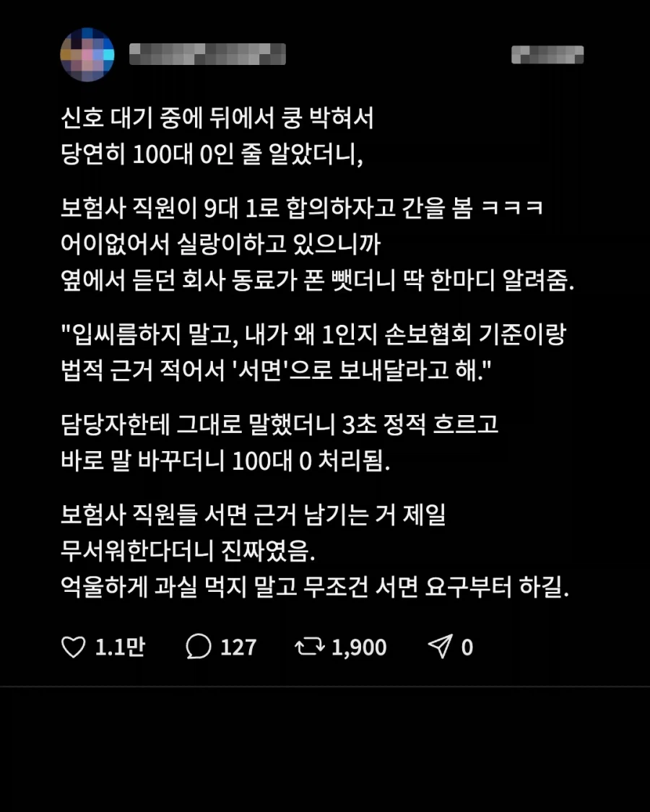
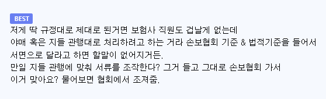
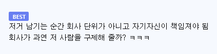

https://bbs.ruliweb.com/best/board/300143/read/76738814



https://bbs.ruliweb.com/best/board/300143/read/76738814



아니래
보험에서 딸깍 해결법은 오직 손해사정사 쓰는것뿐이다
손에는 좀 그렇구...
")
")
금감원이 1황일걸
이제 100대빵도 합의금 15만원 고정이라는데 맞음?
15만원은 뭐 보험사 출장비임?
그건 경상 대인 기본 위자료일걸 고정 아님
이제 경상은 15만원 고정임 금융위에서 경상환자한테 향후치료비 주지 말라고 약관 개정함
경상도가 뭘 잘못했다고
정확히 말하면 원래 12~14급 위로금은 15만원이었음
병원 계속 다닐까봐 이전에는 향후치료비라는 명목으로 합의금 챙겨준거지
9월 10일부터 8주룰 생겨서 향치비 줄 필요가 없으니 딱 15만원 고정임
흠..신기하게 바꼈네
난 올해 1월에 사고가 났었는데
보험사에서 합의를 보자는 이유는
내가 지불보증으로 병원을 계속 다닐 시에 사측에서 손해가 나니까 손해를 줄일려고 합의를 보자는거잖아.그런데
8주룰이 생겼다면 나는 하루에 통원비가 9만원정도 든다고 설명 들었고 나는 실제로 주5일 다녔거든.
그럼 주에 45만원씩 8주면 360만원이 보험사측에서 지불해야하는건데. 예전처럼 200만원정도에 합의를 보고 치우는게 사측입장에선 더 유리한 조건아님?
입원 환자의 경우 도시평균노동단가/30일 해서 하루에 9만 5천원이고 통원은 교통비만 지급해서 하루에 8천원임
경상환자는 입원 1주일 이후부터는 병원도 안받아주려고 함 심평원에서 조사 들어와서
고로 경상환자가 아무리 병원은 많이 다닌다고 해도 7일 입원으로 66만원, 30일 통원으로 24만원, 여기에 위로금 15만원으로 100만원 받는거
그걸 노리고 안아픈데 병원 오래 다니는 문제가 생김. 합의금 많이 안주면 병원 다녀버린다? 하는거고
뭐여그럼 차에 치여도 15만원 받고 걍 꺼지라 이거임?ㅋㅋㅋㅋ 합의금도없어?
억울하면 11급 이상 받아야됨 뇌진탕이든 CT MRI 찍어서 미세골절 찾든
씨티랑 mri 찍었는데 없으면 검사비용 내가 내야함?
난 이거 맘에들어
14급이 10만원이상 받는거 그냥 말이 안됨
아주그냥 종이비행기에 꽂혀도 식물인간되겠어
대인합의금이면 기본제시 금액일걸? 일단 덜주는게 고과인 직업이라서
https://youtu.be/NJZmUnRHbvc
한문철보면 맨날 보험사 고아짓하는거 보이는데
보험사 공개하면 법에 걸림? 그거만 통계내도 누가 진짜 내돈받고 남의편드는 개새끼들인지 알수 있지 않나
사실적시 명예훼손,영업방해 기타등등 뭐가 많음
사실적시 명예훼손 걸고 늘어지나봄
ㅈㄴ악법이네
같은 보험사여도 사바사도 있다보니....
며칠전에 우리회사사람도 100대빵 사고였는데 대인 8대2주장하다가 대인처리안하기로 하고 100:0받아서 차수리하기로했는데
ㅇㄷ
살다 보면 애매한 시간에 전화 와서 묻는 질문에
네네~ 하며 다 대답하다가 말려들어서 난감한 결과를 맞이하는 경우가 있습니다.
그럴 때는 지금 갑자기 전화를 받아서 경황이 없으니 문자나 이메일로 질문을 하면 답장 보내겠다고 하세요.
공무원인 경우 그렇게 연락을 못한다고 하면 전자 문서로 보내달라고 하세요.
그런 다음 문서로 질문을 받으면 ai로 알아보고 답장을 하던가 무시하던가 해야 합니다.
대인합의금 받아보니 이건 진짜 문제 있더라 ㅋㅋㅋ
병원도 그걸로 돈 버니까 과잉진료 오짐...특히 한의원 ㅋㅋㅋ
지식이 늘었다
ㅇㄱㅈㅉㅇㅇ?